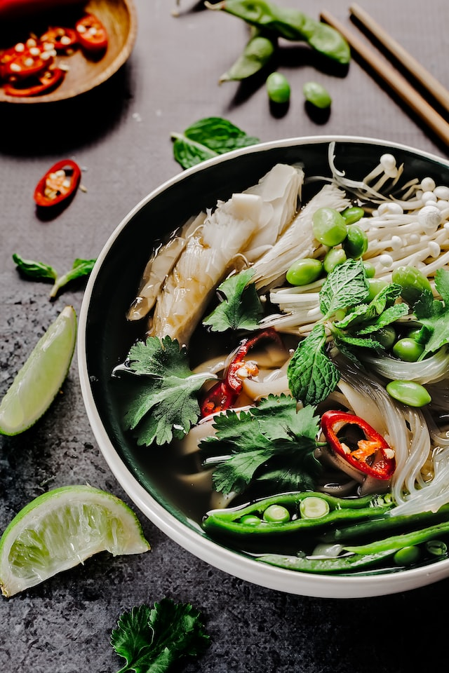

Pho

Vietnamese soup that's made with all the good stuff
broth, noodles, beef (or other protein) and lots of mix-and-match toppings.
Ingredients:
- 1 large white onion, peeled and halved
- 3-inch piece of fresh ginger, halved lengthwise
- 5 star anise
- 4 whole cloves
- 3 (3-inch) cinnamon sticks
- 2 cardamom pods
- 1 tablespoon whole coriander seeds
- 8 cups good-quality beef stock (or chicken or vegetable stock)
- 1 tablespoon brown sugar
- 2 teaspoons fish sauce
- fine sea salt, to taste
Steps:
- Char the onions and ginger
- Make the broth
- Prep the noodles
- 4 oz cream cheese sliced into strips
- Assemble
- Serve immediately
-